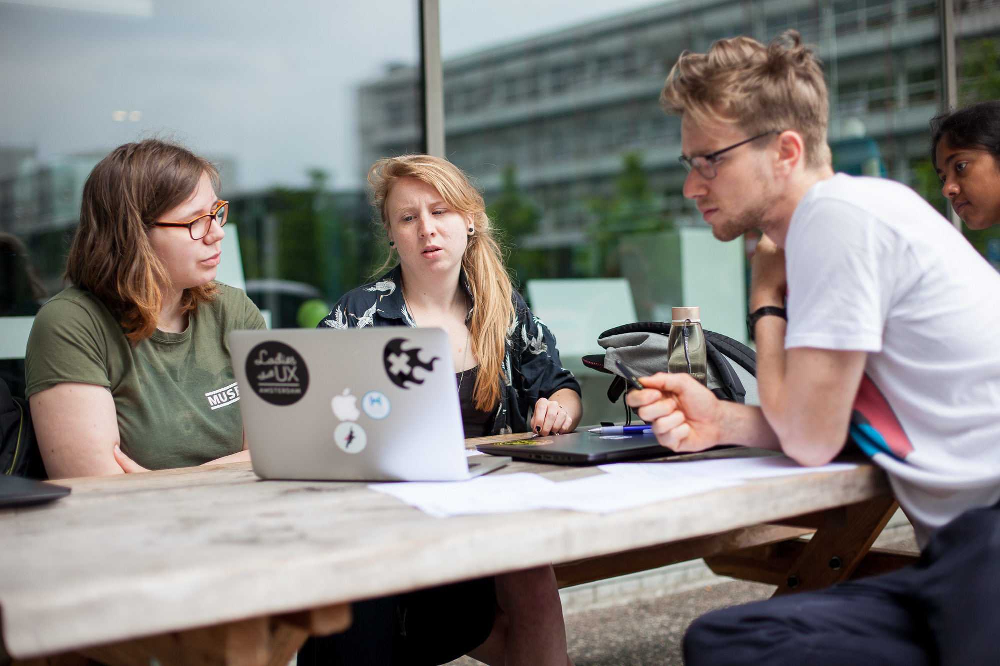
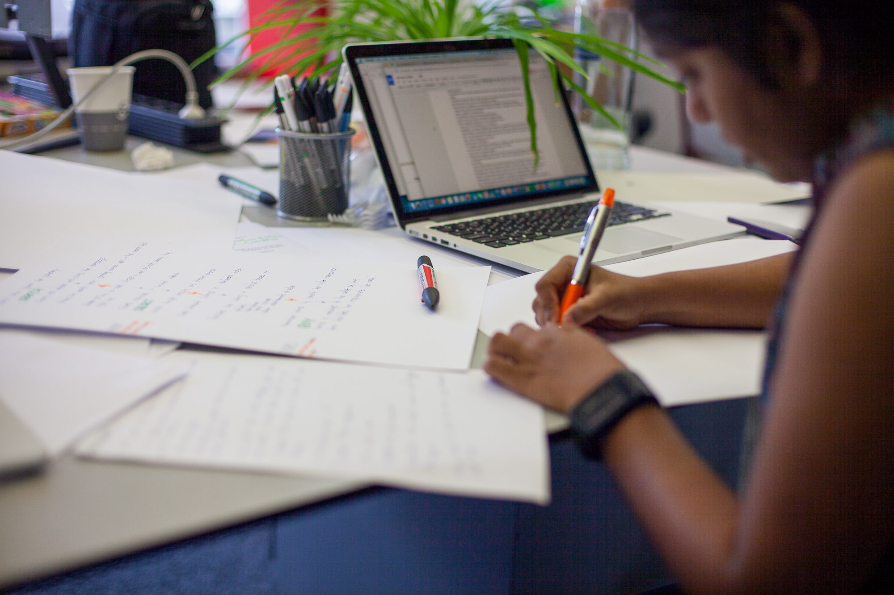
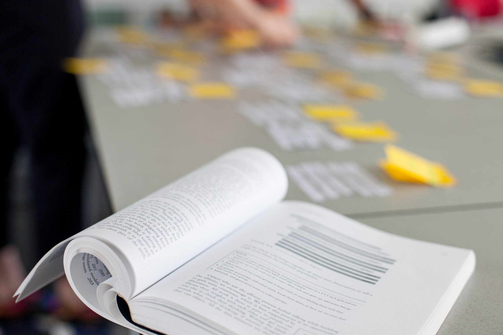
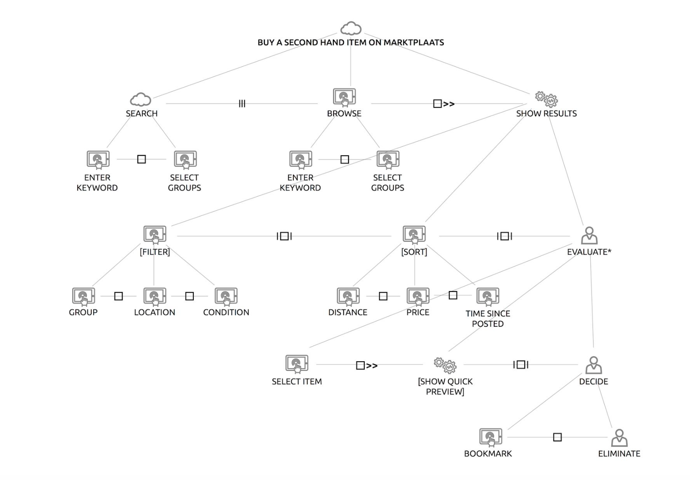

Marktplaats is the biggest buy and sell platform in The Netherlands. It has over 2.1 million unique visitors every day. For an upcoming strategy project with Marktplaats, we wanted to understand the actions of people who buy goods (buyers) through the platform. For this, we chose the Contextual Task Analysis method.
Outcome: Detailed interview notes which were to be analysed further
The team member who conducted the interview acted as the work modeler, while the others collected notes and interpreted the questions, design ideas and insights that arose during the discussion. Sharing the same insights and interpretations is key for a successful and efficient design process.
The interview notes were then used to make the affinity diagram. The first step is to group the notes to identify themes. These themes are grouped to resemble the user journey and are an abstract representation of the opinion of the users. In the final grouping, we created the main topics: ‘platform’, ‘find’, ‘select/decide’, ‘remember’ and ‘make offer’.
With the affinity diagram as a basis, we constructed the ConcurTask Trees (CTT). This schematic overview offers the stakeholders of the project a clear, hierarchical overview. It is a great tool for communication between team members because of its abstract notation; it allows all members, regardless of their design skills, to contribute and to understand the flow of the solution. Due to its hierarchical structure, it is also the ideal stepping stone to construct wireframes in a later stage of the design process.
Designed a market ready product for Embrace Innovations by collaborating with multiple stakeholders
Conceptualised and prototyped an interactive dashboard for Do CHANGE, an EU funded project
Designed onboarding using principles of persuasion for Eventix.io